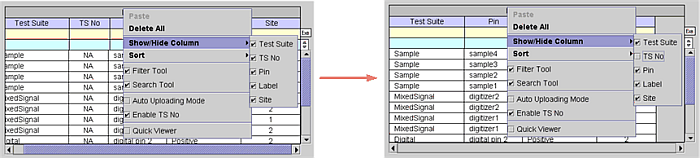

Show/Hide Columns
Each column can be hidden or shown. Without a waveform selected, right-click and choose Show/Hide Column from the -menu, then select the column to hide or show.
The following example shows the TS No column hidden.

Each column can be hidden or shown. Without a waveform selected, right-click and choose Show/Hide Column from the -menu, then select the column to hide or show.
The following example shows the TS No column hidden.
